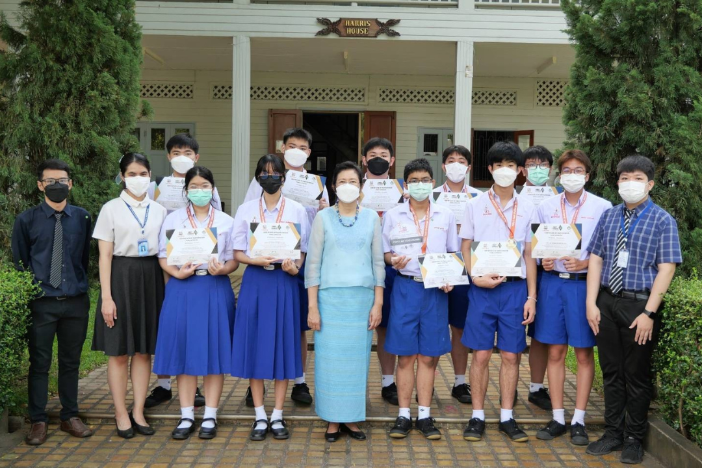
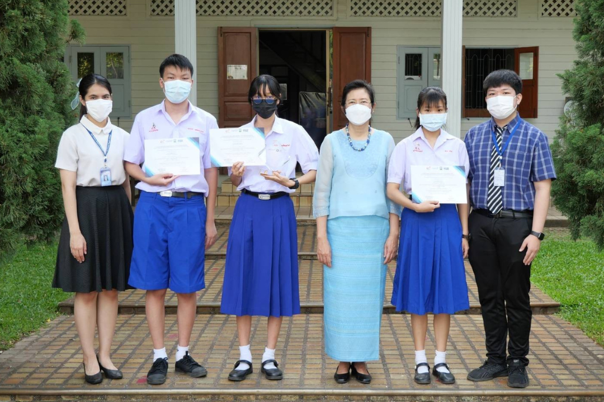
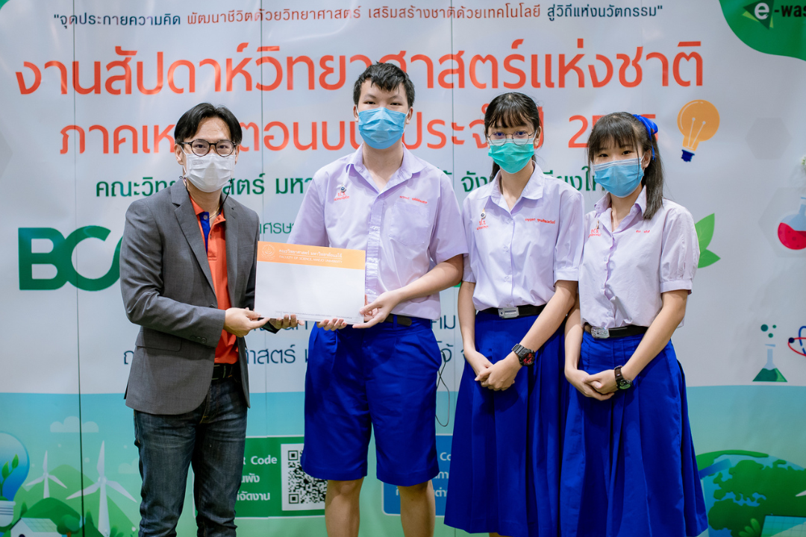

In 2021, I participated in the FTC competition as the CEO & Strategy of our team, where I was responsible for planning, managing the project direction, and defining strategies to enhance our robot's performance. Our team successfully advanced to the national round and received the Popular Vote award . This award reflected the strength, functionality, and attractive design of our robot, which met competition standards. The experience also improved my leadership.
In 2021, I participated in the FTC competition as the CEO & Strategy of our team, where I was responsible for planning, managing the project direction, and defining strategies to enhance our robot's performance. Our team successfully advanced to the national round and received the Popular Vote award . This award reflected the strength, functionality, and attractive design of our robot, which met competition standards. The experience also improved my leadership.

In 2021, my friends and I participated in the National Software Contest (NSC) and successfully advanced to the final round, which consisted of three stages: the proposal round (2021), the funding round (2021), and the national competition round (2022). I advanced to the final stage and received an honorable mention award at the national level for developing a software project related to climate change and environmental solutions in the student category.
In 2021, my friends and I participated in the National Software Contest (NSC) and successfully advanced to the final round, which consisted of three stages: the proposal round (2021), the funding round (2021), and the national competition round (2022). I advanced to the final stage and received an honorable mention award at the national level for developing a software project related to climate change and environmental solutions in the student category.

In 2022, I participated in a science project competition where I successfully advanced to the regional showcase round. This opportunity allowed me to present my project to a wider audience and receive valuable feedback from experts in the field. Through this competition, I was honored to receive an honorable mention award, which recognized the quality and creativity of my work. The experience greatly enhanced my research skills and deepened my passion for scientific inquiry.
In 2022, I participated in a science project competition where I successfully advanced to the regional showcase round. This opportunity allowed me to present my project to a wider audience and receive valuable feedback from experts in the field. Through this competition, I was honored to receive an honorable mention award, which recognized the quality and creativity of my work. The experience greatly enhanced my research skills and deepened my passion for scientific inquiry.
Hobby
Reading, Gaming, Watching movies, Gardening, Playing badminton, Listening to music, Drawing